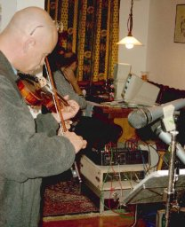
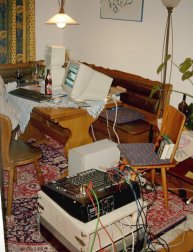
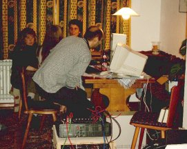
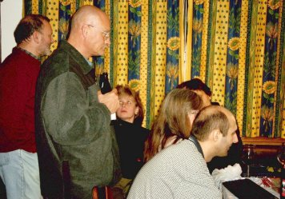
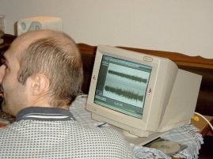

Die Musik der Ofenrohre
„Die Ofenrohre“ machen am liebsten rein akustische Musik: Bluegrass-Klassiker, Rags, Reels, Hornpipes aus der irischen und amerikanischen Folkmusik mit dem Schwerpunkt auf dem Five-String-Banjo und Geige prägen den Stil der Band. Wenn Markus sich warm gespielt hat, geht so manches Stück bis an die Grenze des gerade noch Spielbaren.
Unser Paradiesvogel Nefti ist der zweite Solist in der Band: Er spielt die amerikanische Flat-Mandoline, er liebt aber auch schon mal die Geige. Daneben macht er manche Einleitung mit der Tin-Flöte oder auch mit seinem hawaiianischen Holz-Saxophon. Rock ’n Roll oder elsässische Volkslieder auf Dudelsack ist sein besonderes Schmankerl.
Neftis Ausflug nach Australien war der Grund für Monika, ihre Geige von der Klassik auf irisch ‚umzutrimmen‘. Monika ist so flott, dass sie bei manchen Stücken das Banjo an Geschwindigkeit übertrifft. Trotzdem bleibt ihr Vortrag ausdrucksstark, ein Vorteil ihres klassischen ‚Vorlebens‘.
Jan hat sich die Mandoline ‚reingezogen und bläst sein eigenes Holz-Saxophon oder auch den Dudelsack im Duett mit Nefti. Nun muss er auch noch die Synkopen und manchmal die Gitarre übernehmen.
Beim Rhythmus unterstützt ihn Bernhard auf dem Kontrabass – der kann auch schon mal Gitarre, Geige oder Bratsche spielen.
Die Ofenrohre singen auch gerne: Viele Oldies, englische, amerikanische oder irische Klassiker werden meist mehrstimmig gesungen. Bayerische Gstanzerl und Moritaten (Nefti) und badische und elsässische Lieder (Bernhard, Markus) bereichern das Programm.
Freunde, Fans, aber auch Gäste engagieren die Ofenrohre oft für ihre kleinen Feste. Kontakt über bernhard@die-ofenrohre.de oder Tel. 07644 – 930025.
Im Rawer-Studio
|
 Nefti bei einer Aufnahmeam Wohnzimmertisch. |
 Der Mixer vorn – mehrbrauchten wir nicht. |
 Markus nimmt Platz,um alles zu überwachen. |
|
 Andächtiges Lauschen beim ersten Abspielen. |
 „Schaut, so sieht’s aus,was wir gerade gemacht haben!“ |
|